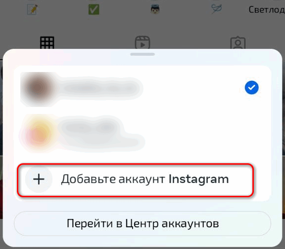
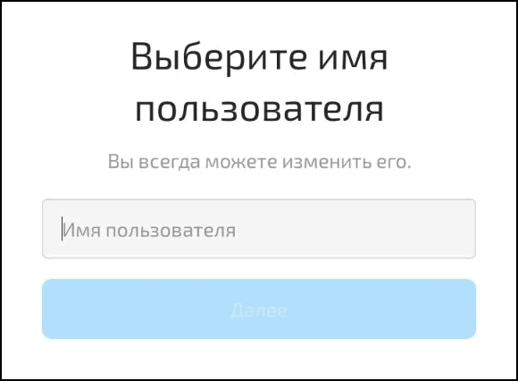
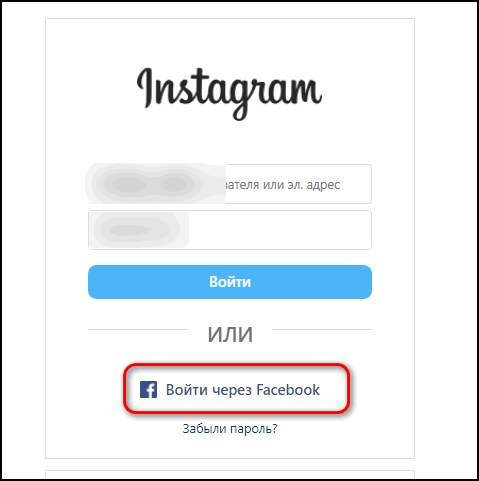

Второй аккаунт в Инстаграме: создать страницу и управлять

Создать второй аккаунт в Инстаграме* можно с уже существующим, связав предыдущие данные, или создать абсолютно новый с адресом электронной почты, номером телефона. Управление и переключение между страницами не требует ввода логина и пароля.
Как сделать вторую страницу в Инстаграме*
Создать Инстаграм* аккаунт второго на одном телефоне можно тремя способами:
- уже есть одна страница с подтвержденным номером и адресом электронной почты. В этом случае пользователь добавляет еще одну учетную запись, которая будет привязана к текущим данным;
- абсолютно новый, с отличающимся номером и email;
- с помощью страницы Facebook*.
С регистрацией с помощью Фейсбука* могут быть проблемы – социальная сеть требует подтверждения и блокирует новые страницы. Для создания абсолютно нового профиля нужен новый номер, куда будет отправлено подтверждающее сообщение. И в этом случае можно использовать онлайн-сервисы, которые предлагают временные номера. С подключением еще одного аккаунта к своему текущему, пользователи нередко сталкиваются с проблемой: при блокировке основного – получить доступ ко второму сложно. А если заблокировал другой человек, то он сможет добавить в черный список сразу две страницы. Также находя по номеру одну учетную запись – найдется и вторая. Как сделать вторую привязанную страницу:
- Зайти в Инстаграм* - нажать сверху по никнейму.
- Выбрать функцию: «Добавить аккаунт».

- Указать вариант по текущему номеру – придумать никнейм, пароль.

Подтвердить создание аккаунта.
Теперь вторая страница будет связана с первой, но работать отдельно.
Зарегистрироваться по номеру телефона
С помощью дополнительного номера телефона можно создать совершенно новый профиль, несвязанный с предыдущим. Он может понадобиться в случае блокировки первого: написать со второго в техническую поддержку, вести резервный аккаунт, куда перенесены основные данные. Если своего еще одного номера нет, то можно его получить через онлайн-сервисы. Зачастую предлагают бесплатные номера и платные: регистрироваться с помощью первого варианта сложнее, потому что свободные номера быстро разбирают и на один могут создавать одновременно сразу несколько страниц. Как создать учетную запись:
- Зайти в сервис по онлайн номерам – выбрать доступный номер телефона.
- Перейти в Инстаграм* - нажать по аватарке.
- Добавить аккаунт – Зарегистрировать новый.
- С номером телефона – указать тот телефон, который был выбран в первом пункте.
- Подождать, пока туда придет сообщение с подтверждающим кодом.
- Пройти проверку и перейти к заполнению личной информации.
Если приобрести личный номер на несколько дней, то спешить с получение кода не нужно. Но у такого способа есть недостаток: в случае блокировки пользователю не восстановить страницу по номеру, так как истечет срок, а бесплатные обновляют раз в месяц. Поэтому после регистрации желательно привязать свой адрес электронной почты или другой номер, чтобы не потерять профиль при блокировке.
Сделать через страницу в Facebook*
Завести еще один профиль поможет учетная запись в Facebook*. Переносятся все данные: фотография, название. Пользователь должен дать согласие на перенос сведений или же придумать новые. Как зарегистрироваться в Инстаграме* с помощью Facebook*:
- Авторизоваться в Фейсбуке* - перейти в приложение Инстаграма*.
- Зарегистрировать новый аккаунт – Связать с Facebook*.

- Подтвердить – разрешить использовать фотографию и имя пользователя.
- Придумать пароль – завершить регистрацию.
После этого можно заходить в свой профиль в Инстаграме* с помощью Фейсбука*. С таким способом регистрации можно организовать кросспостинг – размещение публикаций в обе социальные сети одновременно. Также некоторые комментарии будут показаны из Инстаграма* в Фейсбук*, в разделе последней активности и если автор прокомментированной публикации ведет публичную страницу.
Чтобы отвязать страницы, придется подключить доступные способы восстановления, придумать пароль и удалить страницу во второй социальной сети.
Управление двумя аккаунтами
Управление страницами не требует постоянной авторизации. Переключатель находится в верхней части экрана, там же где и никнейм. Нажав по нему, появится небольшое меню с разными учетными записями и возможностью переключиться на любую. Учетные записи существуют раздельно, поэтому можно размещать разные публикации. Но можно организовать и взаимную связь: делать репосты Рилс, добавлять в соавторство. Дополнительный профиль – это возможность создать резервную площадку, куда можно отправлять свои публикации и не бояться блокировки первой страницы.
Или, для создания одного коммерческого и личного профиля. Так как аккаунты работают отдельно, то и могут иметь разный статус.
Порой пользователи создают две разные страницы для ведения общедоступного и закрытого. Такой вариант также возможен, чтобы оставлять комментарии или общаться со знакомыми, не приглашая в личное пространство.
Как удалить второй профиль в Инстаграме*
Удаляя аккаунт в Инстаграме*, пользователь должен убедиться, что не перепутал. В новой версии приложения деактивировать учетную запись возможно через «Центр управления», расположенный в настройках. Как убрать один из аккаунтов:
- Зайти в Инстаграм* - Настройки.
- Центр управления – Личная информация.
- Владение и управление – Деактивация или удаление.
Чтобы убирать страницы таким образом, пользователю нужно предварительно переключиться и выбрать на удаление. Если страницы были связаны между собой, то подключить к дочернему новый адрес электронной почты и номер телефона. Далее, нужно подтвердить удаление с помощью пароля. Как только процесс удаления успешно завершится – откроется главная страница. Но в течение следующих 30 дней аккаунт можно восстановить - просто авторизовавшись в нем.